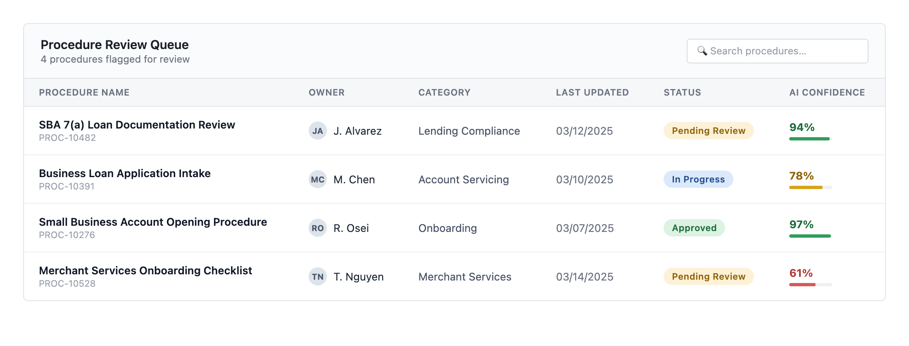

▸ Case 02 / 03
Next ▸
Confidentiality note
This was proprietary internal work at a financial institution. The original files aren't mine to share — every screen shown below is a faithful recreation, rebuilt from memory and notes, not an export from the real product.
8–10 hours wasted per week, per change management employee.
At Wells Fargo, every job function had to be documented in a formal procedure, reviewed and approved before any tech change could ship. The problem: change management had no good way of knowing when an update might affect a procedure they owned — so they sat through every release call, sometimes for hours, just to catch it. Leadership asked: could AI automate this?
Team: 5 developers, a PO, a Scrum master, and me, the UXer.
The Feed — a table of every procedure flagged for review: owner, category, last updated, status, and an AI confidence score, so reviewers know at a glance what needs care vs. what's routine.

The Review — click in for a side-by-side diff: removals in red strikethrough, AI-recommended additions in green underline.

Edge case #1 — one code change can flag multiple procedures, or one procedure can be touched by multiple changes. Each flagged procedure got its own row on the dashboard — users care about what they need to do, not what's happening underneath.
Edge case #2 — when a procedure was touched by more than one change, we added a tabbed view showing the source context behind each. Not a perfect system, but enough transparency for MVP.